Subdivision Curves
Subdvision methods progressively refine a discrete curve and converge to a smooth curve. This allows to perform an interpolation or approximation of a given coarse dataset.
Contents
Installing toolboxes and setting up the path.
You need to download the following files: signal toolbox, general toolbox, graph toolbox and wavelet_meshes toolbox.
You need to unzip these toolboxes in your working directory, so that you have toolbox_signal, toolbox_general, toolbox_graph and toolbox_wavelet_meshes in your directory.
For Scilab user: you must replace the Matlab comment '%' by its Scilab counterpart '//'.
Recommandation: You should create a text file named for instance numericaltour.sce (in Scilab) or numericaltour.m (in Matlab) to write all the Scilab/Matlab command you want to execute. Then, simply run exec('numericaltour.sce'); (in Scilab) or numericaltour; (in Matlab) to run the commands.
Execute this line only if you are using Matlab.
getd = @(p)path(p,path); % scilab users must *not* execute this
Then you can add the toolboxes to the path.
getd('toolbox_signal/'); getd('toolbox_general/'); getd('toolbox_graph/'); getd('toolbox_wavelet_meshes/');
Curve Subdivision
Starting from an initial set of control points (which can be seen as a coarse curve), subdivision produces a smooth 2-D curve.
Shortcut to plot a periodic curve.
ms = 20; lw = 1.5; myplot = @(f,c)plot(f([1:end 1]), c, 'LineWidth', lw, 'MarkerSize', ms); myaxis = @(rho)axis([-rho 1+rho -rho 1+rho], 'off');
We represent a dicretized curve of \(N\) points as a vector of complex numbers \(f \in \CC^N\). Since we consider periodic boundary conditions, we assume the vectors have periodic boundary conditions.
Define the initial coarse set of control points \(f_0 \in \CC^{N_0}\).
f0 = [0.11 0.18 0.26 0.36 0.59 0.64 0.80 0.89 0.58 0.22 0.18 0.30 0.58 0.43 0.42]' + ...
1i * [0.91 0.55 0.91 0.58 0.78 0.51 0.81 0.56 0.10 0.16 0.35 0.42 0.40 0.24 0.31]';
Rescale it to fit in a box.
f0 = rescale(real(f0),.01,.99) + 1i * rescale(imag(f0),.01,.99);
Display it.
clf; myplot(f0, 'k.-');
myaxis(0);
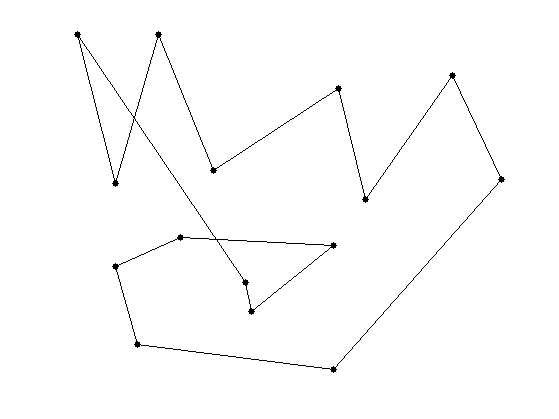 One subdivision step reads \[ f_{j+1} = (f_j \uparrow 2) \star h. \] This produces discrete curves \(f_j \in \CC^{N_j}\) where \(N_j = N_0 2^j\).
Here \(\uparrow 2\) is the up-sampling operator \[ (f \uparrow 2)_{2i}=f_i \qandq (f \uparrow 2)_{2i+1} = 0. \]
Recall that the periodic discrete convolution is defined as \[ (f \star h)_i = \sum_j f_j h_{i-j}, \] where the filter \(h\) is zero-padded to reach the same size as \(f\).
The low pass filter (subdivision kernel) \(h \in \CC^K\) should satisfies \[ \sum_i h_i = 2 . \] This ensure that the center of gravity of the curve stays constant \[ \frac{1}{N_j} \sum_{i=1}^{N_j} f_{j,i} = \frac{1}{N_0} \sum_{i=1}^{N_0} f_{0,i}.\]
Define the subdivision operator that maps \(f_j\) to \(f_{j+1}\).
subdivide = @(f,h)cconv( upsampling(f), h);
We use here the kernel \[ h = \frac{1}{8}[1, 4, 6, 4, 1]. \] It produced a cubic B-spline interpolation.
h = [1 4 6 4 1]; h = 2*h/sum(h(:));
Initilize the subdivision with \(f_0\) at scale \(j=0\).
f = f0;
Perform one step.
f = subdivide(f,h);
Display the original and filtered discrete curves.
clf; hold on; myplot(f, 'k.-'); myplot(f0, 'r.--'); myaxis(0);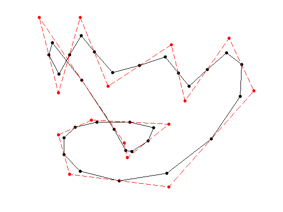
Exercice 1: (check the solution) Perform several step of subdivision. Display the different curves.
exo1;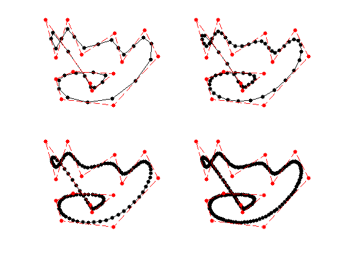
Under some restriction on the kernel \(h\), one can show that these discrete curves converges (e.g. in Hausdorff distance) toward a smooth limit curve \(f^\star : [0,1] \rightarrow \CC\).
We do not details here sufficient condition to ensure convergence and smoothness of the limitting curve. The interested reader can have a look at [DynLevin02] for a review of theoritical guarantees for subdivision.
The limit curve \(f^\star\) is a weighted average of the initial points \(f_0 = (f_{0,i})_{i=0}^{N_0-1} \in \CC^{N_0}\) using a continuous scaling function \(\phi : [0,1] \rightarrow \RR\) \[ f^\star(t) = \sum_{i=0}^{N_0-1} f_{0,i} \phi(t-i/N_0). \] The continuous kernel \(\phi\) is a low-pass function which as a compact support of width \(K/N_0\). The control point \(f_{0,i}\) thus only influences the final curve \(f^\star\) around \(t=i/N_0\).
The scaling function \(\phi\) can be computed as the limit of the sub-division process \(f_j\) when starting from \(f_0 = \delta = [1,0,\ldots,0]\), which is the Dirac vector.
Exercice 2: (check the solution) Compute the scaling function \(\phi\) associated to the subdivision.
exo2;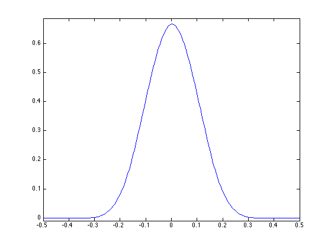
Exercice 3: (check the solution) Test with different configurations of control points.
exo3;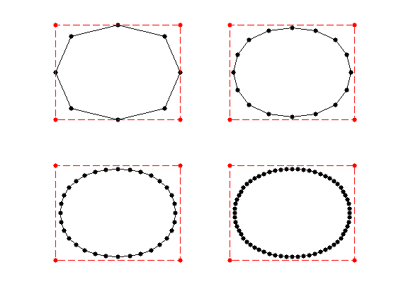
Quadratic B-splines
We consider here the Chaikin "corner cutting" scheme [Chaikin74].
For a weight \(w>1\), it corresponds to the following kernel: \[ h = \frac{1}{1+w}[1, w, w, 1]. \] The weight is a tension parameter that controls the properties of the interpolation.
hcc = @(w)[1 w w 1]/(1+w);
For \(w=3\), the scaling function \(\phi\) is a quadratic B-spline.
Exercice 4: (check the solution) Test the corner-cutting for \(w=3\).
exo4;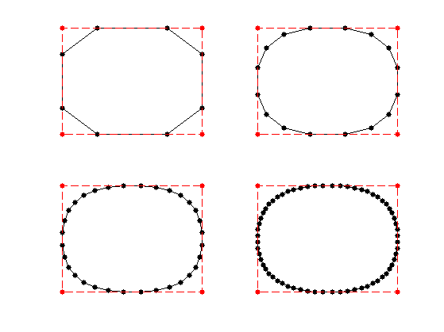
Exercice 5: (check the solution) Test the corner-cutting for vaious values of \(w\).
exo5;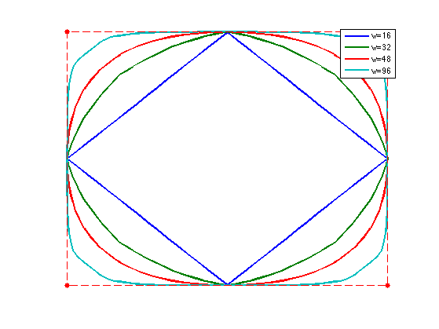
Interpolating Subdivision
Interpolating schemes keeps unchange the set of point at the previous level, and only smooth the position of the added points.
A subdivision is interpolating if the kernel satisfies \[ h(0)=1 \qandq \forall i \neq 0, \quad h(2i)=0. \]
We consider the four-point interpolation kernel proposed in [DynLevGre87]: \[ h = [-w, 0, 1/2+w, 1, 1/2+w, -w] \] where \(w>0\) is a tension parameter.
h4pt = @(w)[-w, 0, 1/2+w, 1, 1/2+w, 0, -w];
One usually choose \(w=1/16\) wich corresponds to cubic B-spline interpolation. It can be shown to produce \(C^1\) curves for \( w \in [0, (\sqrt{5}-1)/8 \approx 0.154] \), see [DynGreLev91].
Exercice 6: (check the solution) Perform the interpolating subdivision for \(w=1/16\).
exo6;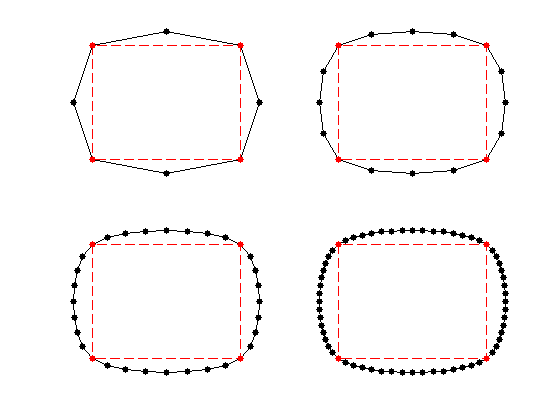
Exercice 7: (check the solution) Test the influence of \(w\).
exo7;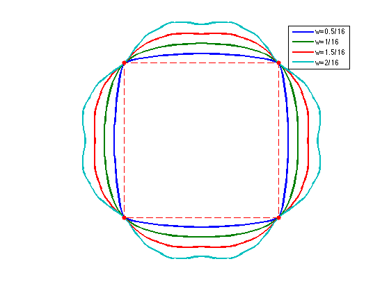
Exercice 8: (check the solution) Compare the result of the quadratic B-spline, cubic B-spline, and 4-points interpolating.
exo8;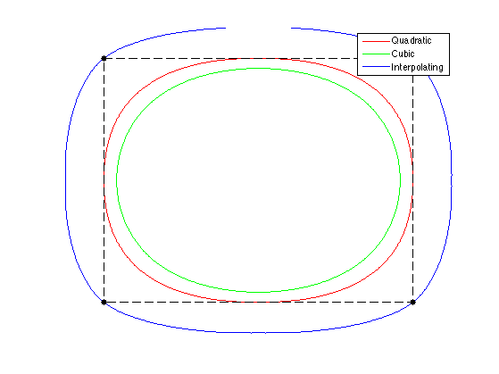
The 4-point scheme for \(w=1/16\) is generalized to \(2k\)-point schemes of Deslauriers-Dubuc [DeslDub89]. This corresponds to computing a polynomial interpolation of degree \(2k-1\), which generalizes the cubic interpolation. Using larger \(k\) leads to smoother interpolation, at the price of a larger interpolation kernel.
We give here the odd coefficients of the filters.
H = { [0.5000 0.5000], ...
[-0.0625, 0.5625, 0.5625, -0.0625], ...
[0.0117, -0.0977, 0.5859, 0.5859, -0.0977, 0.0117], ...
[-0.0024, 0.0239, -0.1196, 0.5981, 0.5981, -0.1196, 0.0239, -0.0024] };
hdd = @(k)assign(assign(zeros(4*k-1,1),1:2:4*k-1,H{k}), 2*k, 1);
Exercice 9: (check the solution) Display the scaling function associated to these Deslauriers-Dubuc filters.
exo9;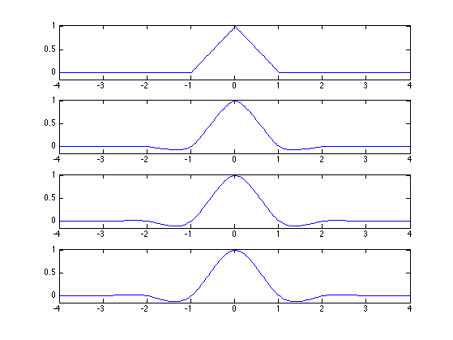
Curve Approximation
Given an input, complicated curve \(g : [0,1] \rightarrow \CC\), it is possible to approximate is by sampling the curve, and then subdividing it. It corresponds to a low pass filtering approximation.
Load an initial random curve, which is a high resolution curve \(g\).
options.bound = 'per';
n = 1024*2;
sigma = n/8;
F = perform_blurring(randn(n,1),sigma,options) + 1i*perform_blurring(randn(n,1),sigma,options);
F = rescale(real(F),.01,.99) + 1i * rescale(imag(F),.01,.99);
Display it.
clf; myplot(F, 'k');
myaxis(0);
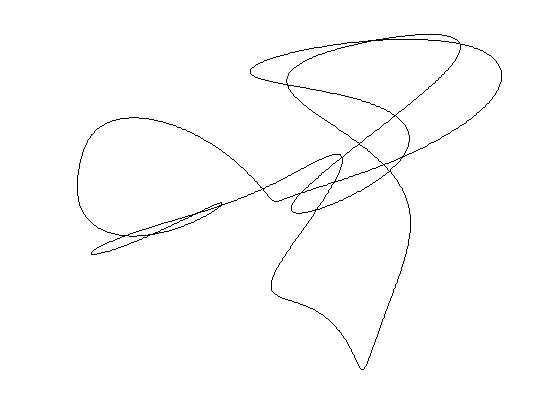 Load an interpolating subvision mask.
h = [-1, 0, 9, 1, 9, 0, -1]/16; h((end+1)/2)=1;
Exercice 10: (check the solution) Perform an approximation \(f\) of the curve using a uniform sampling with \(N_0=20\) points.
exo10;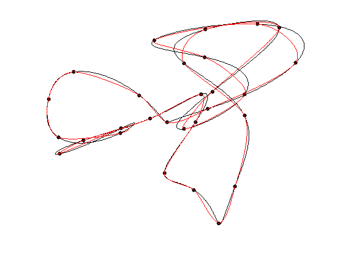
To quantify the quality of the approximation, we use an averaged Hausdorff distance. The distance between two sets of points \(X\) and \(Y\) is \[ d(X,Y) = d_0(X,Y)+d_0(Y,X) \qwhereq d_0(X,Y)^2 = \frac{1}{\abs{X}} \sum_{x \in X} \umin{y \in Y} \norm{x-y}^2. \]
Compute the pairwise distances matrix \(D_{i,j} = \norm{f_i-g_j}^2\) between points.
dist = @(f,g)abs( repmat(f, [1 length(g)]) - repmat(transpose(g), [length(f) 1]) );
Compute the Hausdorff distance.
hausdorff = @(f,g)sqrt( mean(min(dist(f,g)).^2) ); hausdorff = @(f,g)hausdorff(f,g) + hausdorff(g,f);
Exercice 11: (check the solution) Display the decay of the Hausdorff approximation error as the number \(N_0\) of sampling points increases.
exo11;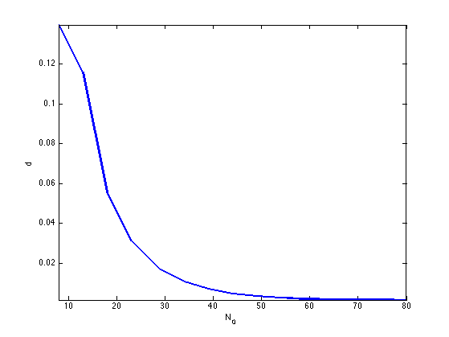
3-D Curve Subdivision
It is possible to construct 3-D curves by subdivision.
Exercice 12: (check the solution) Perform curve subdivision in 3D space.
exo12;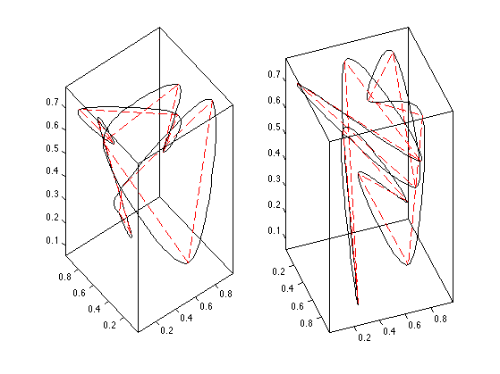
Bibliography
- [DynLevGre87] N. Dyn, D. Levin and J.A. Gregory, A 4-point interpolatory subdivision scheme for curve design, Computer Aided Geometric Design, 4(4), Pages 257-268, 1987.
- [Chaikin74] G. Chaikin, An algorithm for high speed curve generation. Computer Graphics and Image Processing, 3, 346-349, 1974.
- [Riesen75] R. Riesenfeld, On Chaikin's algorithm. Computer Graphics and Image Processing 4, 3, 304-310, 1975.
- [DeslDub89] G. Deslauriers and S. Dubuc. Symmetric iterative interpolation processes. Constructive Approximation, 5(1):49-68, Dec. 1989.
- [DynLevin02] N. Dyn and D. Levin. Subdivision schemes in geometric modelling. Acta Numerica, 11:73-144, Jan. 2002.
- [DynGreLev91] N. Dyn, J.A. Gregory, G. Levin, Analysis of uniform binary subdivision schemes for curve design, Constructive Approximation, 7(1), p. 127-147, 1991.